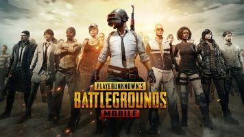
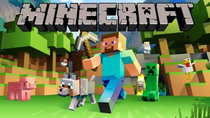
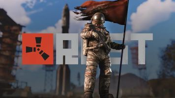
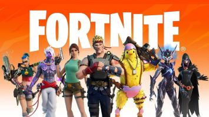
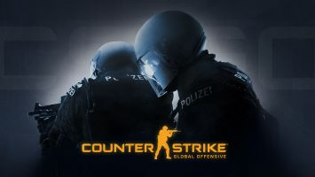
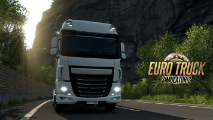

| Nombre del Juego |
Imagen |
Descripción |
| PUBG Mobile |
 |
PUBG Mobile es un juego de Battle Royale donde los jugadores aterrizan en una isla, buscan armas y equipos y luchan por ser el último en pie. |
| Minecraft |
 |
Minecraft es un juego de construcción y exploración donde los jugadores pueden construir estructuras con bloques en un mundo 3D generado aleatoriamente. |
| Rust |
 |
Rust es un juego de supervivencia en línea donde los jugadores deben enfrentarse a los elementos, otros jugadores y la fauna para sobrevivir y prosperar. |
| Fornite |
 |
Fortnite es un juego de supervivencia y construcción desarrollado por Epic Games. Los jugadores pueden competir solos, en dúos o en escuadrones para ser el último en pie en un campo de batalla. |
| Counter-Strike |
 |
Counter-Strike es un juego de disparos en primera persona donde los jugadores se dividen en equipos terroristas y antiterroristas y compiten en diferentes modos de juego. |
| Assetto Corsa |
|
Assetto Corsa es un simulador de carreras de autos desarrollado por Kunos Simulazioni. Ofrece una experiencia de conducción realista con una amplia variedad de autos y pistas. |
| Eurotruck Simulator 2 |
 |
Eurotruck Simulator 2 es un juego de simulación de camiones donde los jugadores pueden conducir camiones por Europa, transportar carga y expandir su empresa de transporte. |